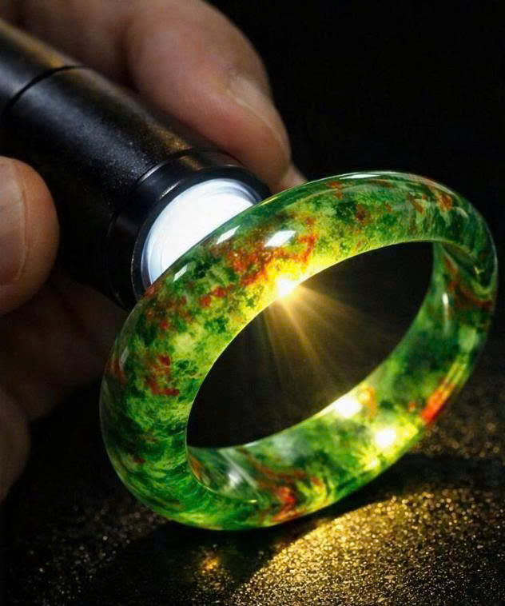
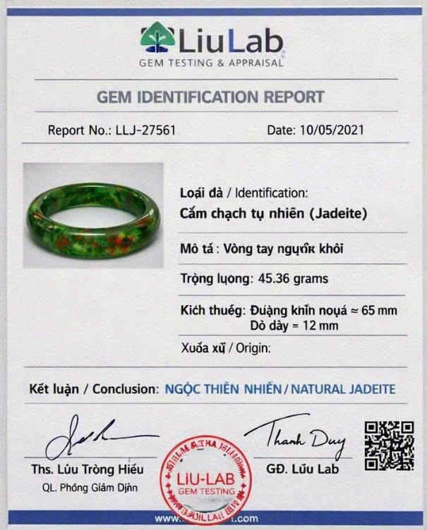

Vòng tay cẩm thạch lý huyết lục bảo - Mã số JADE-02
Chiếc vòng được chế tác từ khối ngọc cẩm thạch tự nhiên (Jadeite Type A) khai thác tại Myanmar. Sắc xanh lục hòa quyện cùng vân lý huyết tạo nên vẻ đẹp trang nhã và giá trị sưu tầm cao.


Bảng thông số kiểm định vật lý
| Tiêu chí kiểm định | Kết quả đo lường thực tế |
|---|---|
| Chủng loại khoáng vật | Cẩm thạch tự nhiên (Jadeite Type A) |
| Đường kính lòng trong | 65 mm |
| Trọng lượng tổng | 45.36 gram |
| Chiết suất | 1.66 (Điểm đo chuẩn) |
| Tỷ trọng thể tích | 3.33 g/cm³ |
| Tình trạng xử lý | Không qua xử lý keo và màu nhuộm nhân tạo |